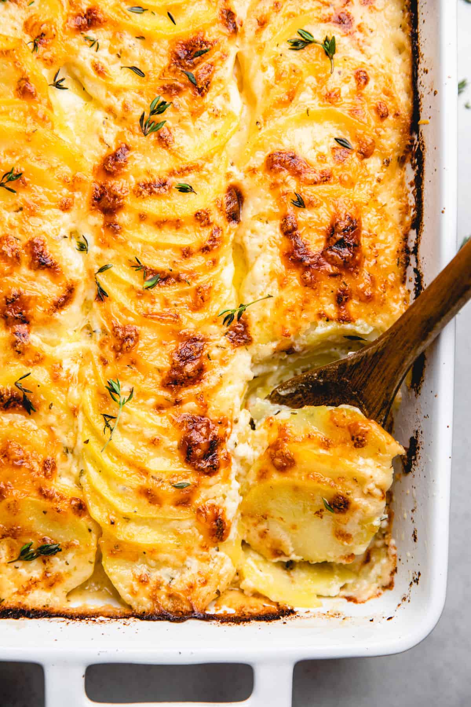

Potatoes Au Gratin

Description
Creamy, cheesy, and indulgent, this potatoes au gratin recipe is perfect
for holiday meals or any dinner that calls for something special.
This wonderful classic potatoes au gratin recipe is one of my go-to
Thanksgiving side dishes, but it's also perfect for any special dinner. It
involves layering thinly sliced potatoes with heavy cream and grated
cheese in a casserole dish, and then baking until the cream thickens and
blankets the potatoes in a rich, creamy sauce. This dish is definitely
worthy of a special occasion, but honestly, enjoying this au gratin
potatoes recipe feels like a special occasion all on its own.
Ingredients
- Butter to grease the baking dish
- 2½ pounds Russet potatoes (3 to 4), peeled and sliced very thin
- 1½ teaspoons salt
- ¼ teaspoon freshly ground black pepper
- 1 cup (4 oz) finely grated Parmigiano-Reggiano
- 2¼ cups heavy cream
- Fresh thyme, for serving (optional)
Steps
-
Preheat the oven to 350°F and set an oven rack in the middle position.
Grease an 8-inch (or 2-quart) baking dish with butter.
-
In a large mixing bowl, toss the potatoes with the salt and pepper until
evenly coated.
-
Arrange some of the potato slices, edges overlapping, in a single layer
on the bottom of the prepared baking dish. Sprinkle a quarter of the
cheese over the potatoes, and then pour a quarter of the cream over the
cheese. Repeat with the remaining potatoes, cheese, and cream, forming 4
layers. Pour any leftover cream over top.
-
Place in the oven and bake, uncovered, for 60 to 75 minutes, or until
the potatoes are tender when pierced with a knife and golden brown on
top. Let the dish settle on the counter for about ten minutes. Sprinkle
with fresh thyme, if using, and then serve.
Back to home